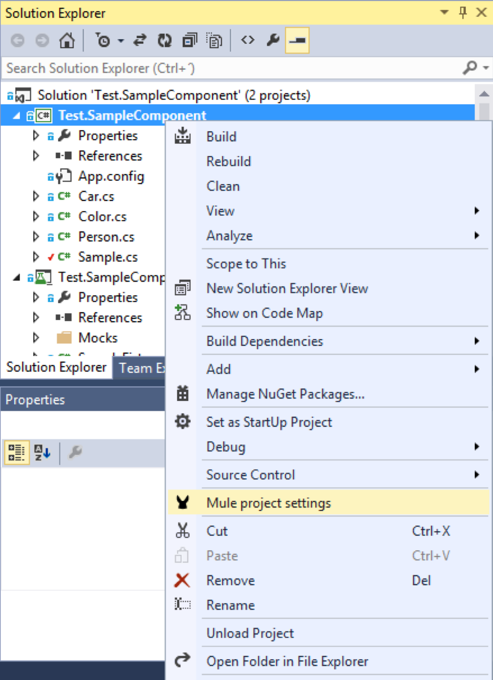
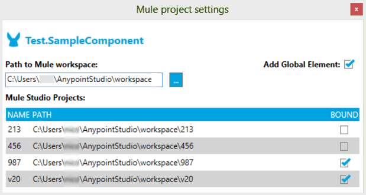

Anypoint Extensions for Visual Studio
| See the DotNet Connector Release Notes for information on changes to this software package. |
Overview
Anypoint Extensions for Visual Studio provides binding and synchronization of Visual Studio projects with Mule applications in Anypoint Studio, the graphical design environment for Anypoint Platform. These extensions from MuleSoft also enable an integrated debugging experience between the two IDEs.
Project binding: It is now possible to bind a Visual Studio project to a Mule application in Anypoint Studio, simplifying the experience of leveraging .NET code in integration applications development. Build artifacts of Anypoint Extensions enabled .NET projects, including dependencies, are automatically synchronized with the Mule application in which they are used. Optionally, a global element that describes the reference to the .NET code can be created and added to your Mule application, removing the need to manually add a reference to a file on disk.
F5 debug experience: Debugging integration applications that leverage .NET code is now much simpler and faster - simply hitting F5 within Visual Studio on a project with Anypoint Extensions enabled launches the debugger and attaches to the running Mule application. Providing a seamless debug experience right from flow design in Anypoint Studio through to code breakpoints in .NET, the Anypoint Extensions makes debugging custom integration code friction free.
Prerequisites
This document assumes that you are familiar with Mule, the Anypoint Studio interface, and Global Elements. Further, it is assumed that you are familiar with the Microsoft .NET Framework.
You need the following components installed on your machine:
-
Anypoint Studio, the graphical interface to Mule. See Download and Launch Anypoint Studio for details
Binding to an Anypoint Studio Project
To bind a Visual Studio class library project to an Anypoint Studio project, follow these steps.
-
Right-click the Visual Studio class library project.
-
Choose the Mule project settings option:
 -
The Mule project settings window opens:
 -
Enter the path to the Anypoint Studio workspace, and the grid populates with all the existing Mule projects in the workspace.
-
Click the checkbox of the Mule project you want to bind to the Visual Studio class library project.
-
You can choose to automatically create the .NET Connector’s global element by clicking Add Global Element. A file named
DotNetConnector.xmlcopies to thesrc/main/appfolder of each Bound Mule Project. This file contains the .NET Connector Global Element which is configured to use the .NET Assembly created upon building the project.
Anypoint Extensions for Visual Studio automatically uses the build target you select for the project to specify one of the following behaviors:
-
Release: When the Visual Studio class library is built, Anypoint Extensions copies the build output of the project to a resource folder in the bound Mule Project(s).
-
Debug: Copies the build output of the project to a resource folder in the Bound Mule Project(s) includes debug symbols for your .NET code that enable F5 Debugging.
In each case, the full output of the .NET project build copies to the resources folder, allowing support for complex multi-artifact projects. The subfolder within the Mule project resources directory is named after the class library project’s Assembly Name. In the image above, the folder is named Test.SampleComponent. You can view the Visual Studio Output window to see what has been copied:
Note: Until the .NET project is built for the first time, nothing creates in the Mule project – it is therefore important before attempting to include the .NET Connector reference in the project or debug it.
.NET Connector Reference
After the output of the .NET project copies to the bound projects in Anypoint Studio, you can easily add a .NET Connector reference to invoke the .NET code. From within Anypoint Studio, refresh your project by right-clicking the project root node and selecting Refresh. A new file called DotNetConnector.xml is visible in the project, which contains the global element that describes the reference to the .NET project.
From the Studio palette, you can now drag and drop the .NET Connector onto the flow designer canvas and configure it to use this reference. Select the .NET Connector element on the canvas, and from the Connector Configuration dropdown, select the entry for your assembly, which is prefixed with DotNet_Resource.
Debugging .NET code
You can start debugging by pressing the F5 key or clicking the Debug button in the toolbar. If an instance of Anypoint Studio is running and is hosting a Bound .NET project, then Visual Studio is automatically attached. If the Mule application is not yet running, Anypoint Extensions for Visual Studio waits for it to start and attaches the debugger automatically.
To cancel this operation, click Cancel.
When debugging a .NET project that is bound to a Mule application, you can add breakpoints as per any executable application, and when .NET code is called, the debugger stops as expected.
FAQ
The following sections list questions that occur frequently about using .NET with Studio.
Questions and Answers
I have multiple Mule applications that I want to use a .NET class library with. Can I use a single .NET project or do I need a copy of the .NET project per Mule project?
You can bind a single .NET project to multiple Mule projects as long as those projects exist in the same Anypoint Studio workspace. The build artifacts automatically synchronize with all projects whenever the .NET project is compiled.
I bound my .NET project to one of my Mule projects, but I don’t see anything new in Anypoint Studio when I switch back to the project.
After binding your Mule project(s), you must build the .NET project again to ensure that the build artifacts are copied to the resources folder of your Mule project. You must also refresh the project to have these assets and the connector global element to appear.
How can I avoid refreshing a project manually – can I make this automatic?
Yes! From within Anypoint Studio, select Window > Preferences > General > Workspace and select the Refresh using native hooks or polling option.
I tried clicking Start on my .NET project or hitting F5, but I get a warning stating that “A project with an Output Type of Class Library cannot be started directly.”
Set the Solution configuration drop-down in the Visual Studio toolbar dialog to Debug to enable F5 debugging.
I see the “Waiting for Anypoint Studio instance” dialog appear, but it seems to display indefinitely. How do I get the debugger to start?
You must run Visual Studio as an Administrator to allow the debugger auto-start functionality to work. Exit Visual Studio, right-click the VS.NET program icon, and select Run As Administrator.